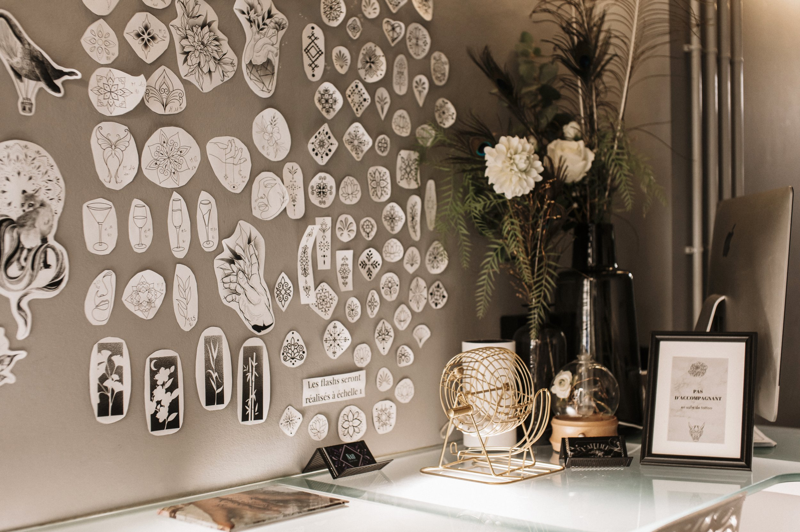
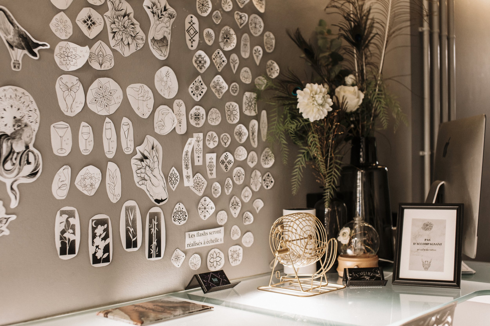
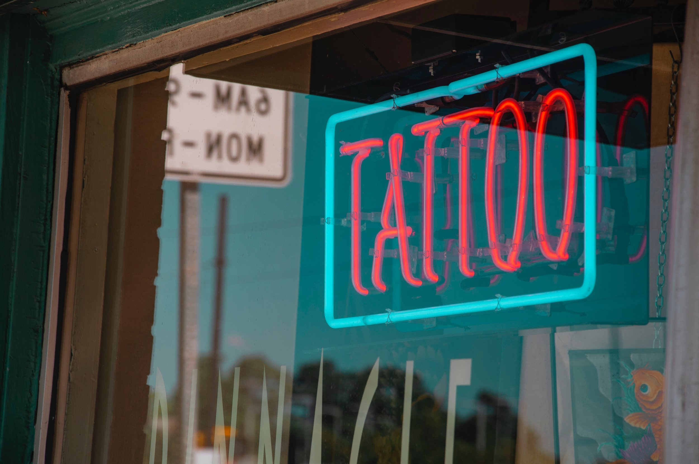

Entretenir son tatouage Vous avez suivi nos conseils sur comment contacter un tatoueur , le tatoueur vous a expliqué la façon dont vous devez prendre soin de votre tatouage afin que sa cicatrisation soit optimale mais vous voulez tout de même savoir si vous ne brûlez pas les étapes. L’Atelier Tattoo est là pour vous aider !
